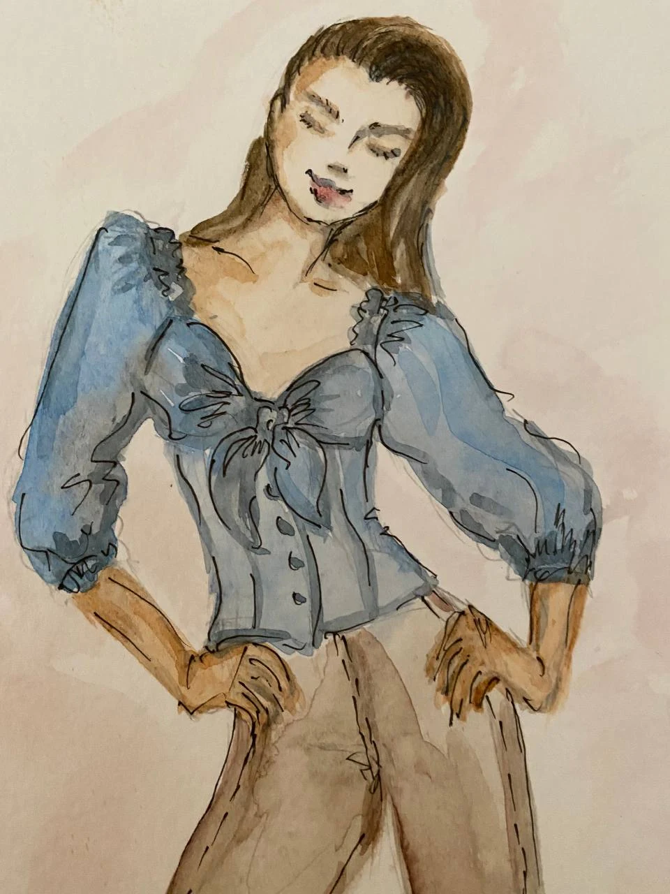
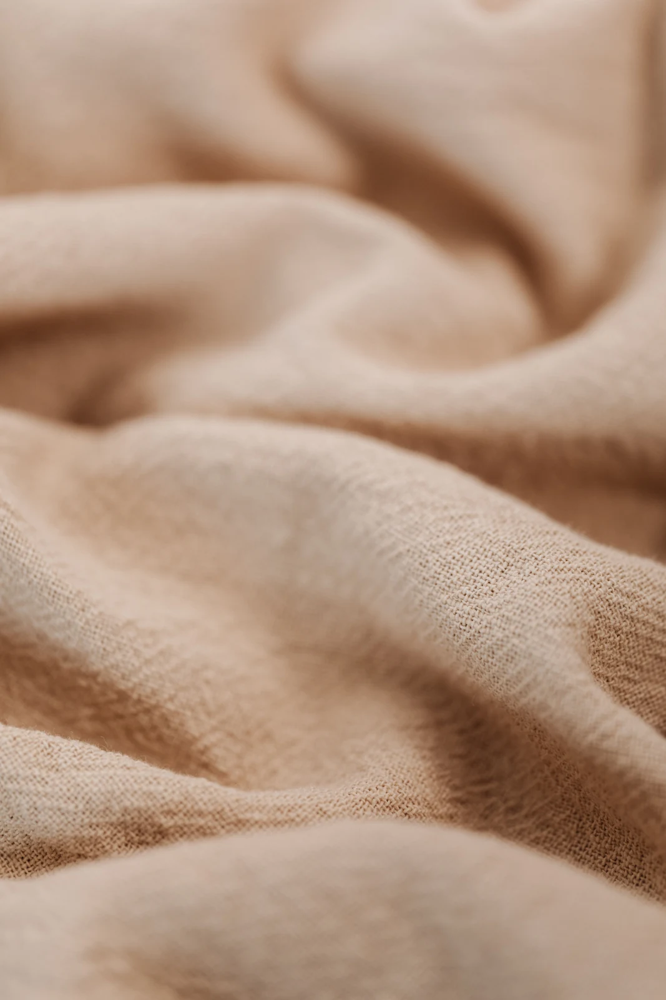
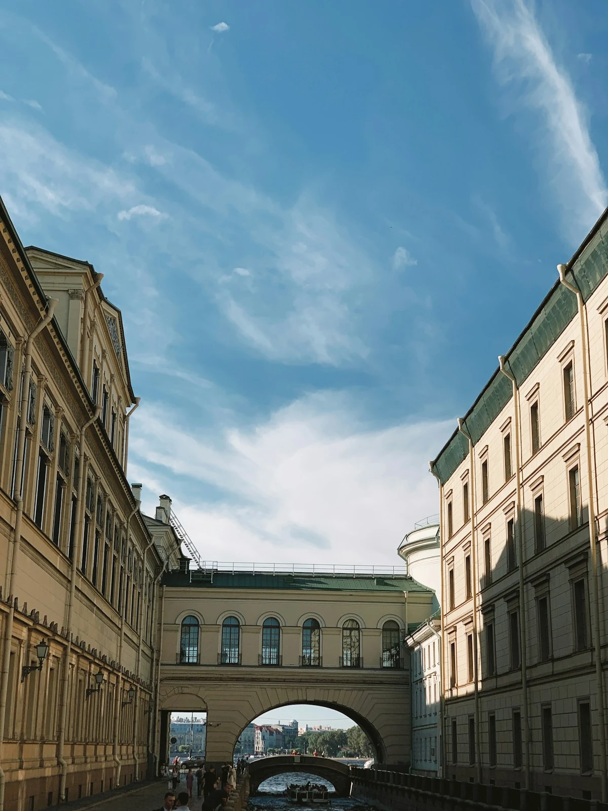
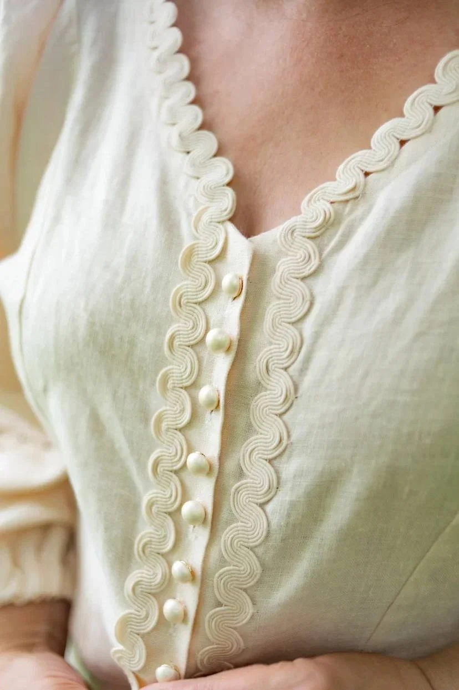
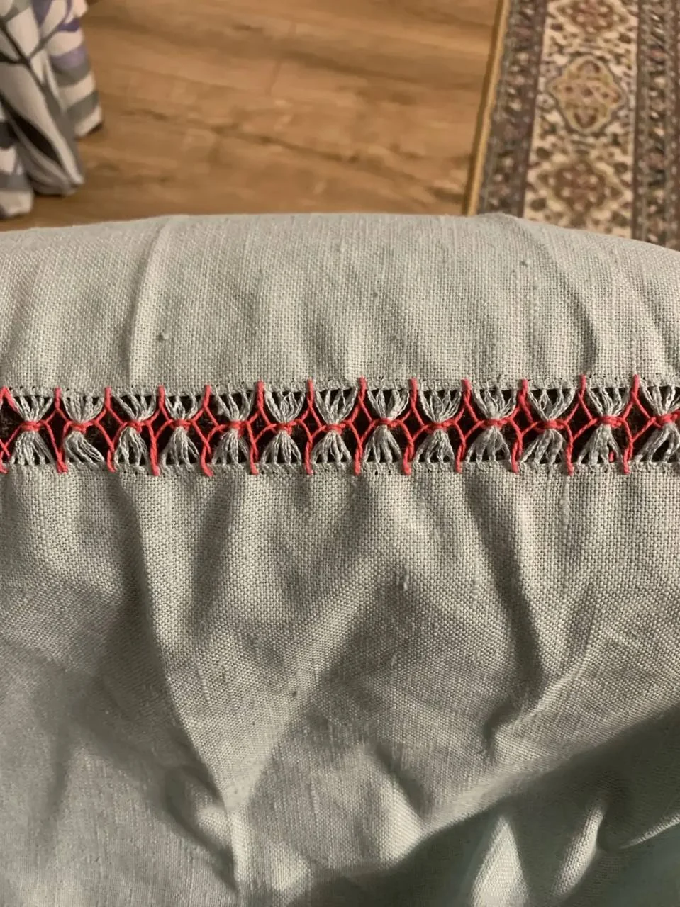
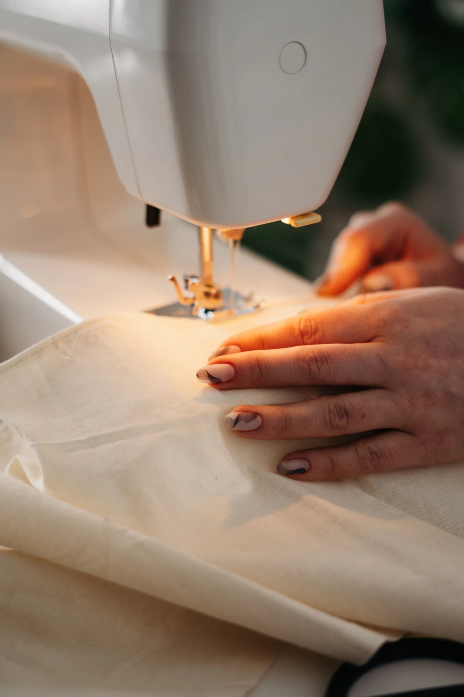
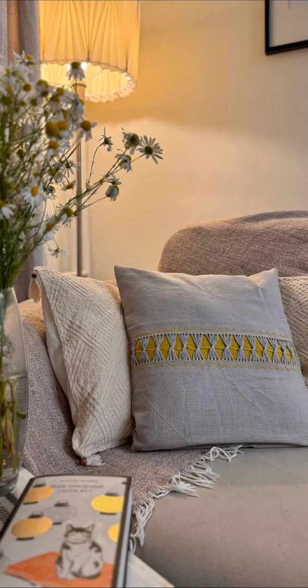
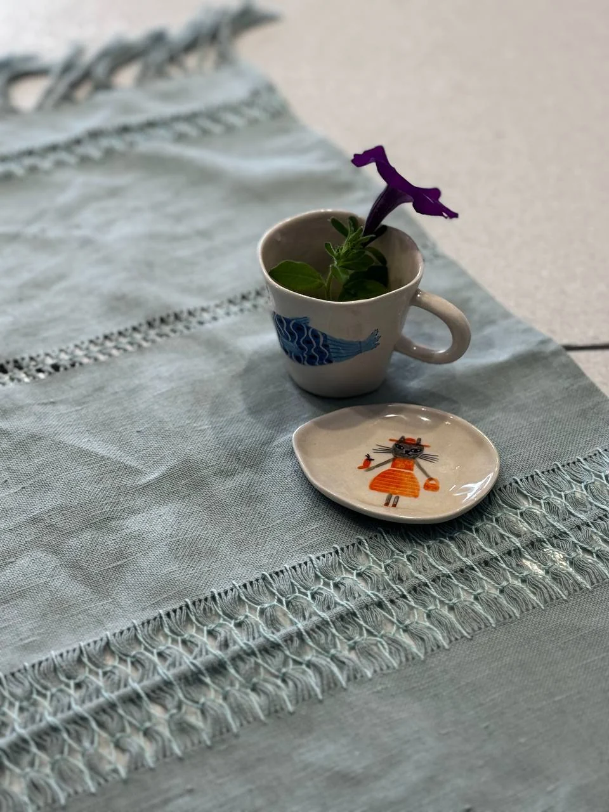
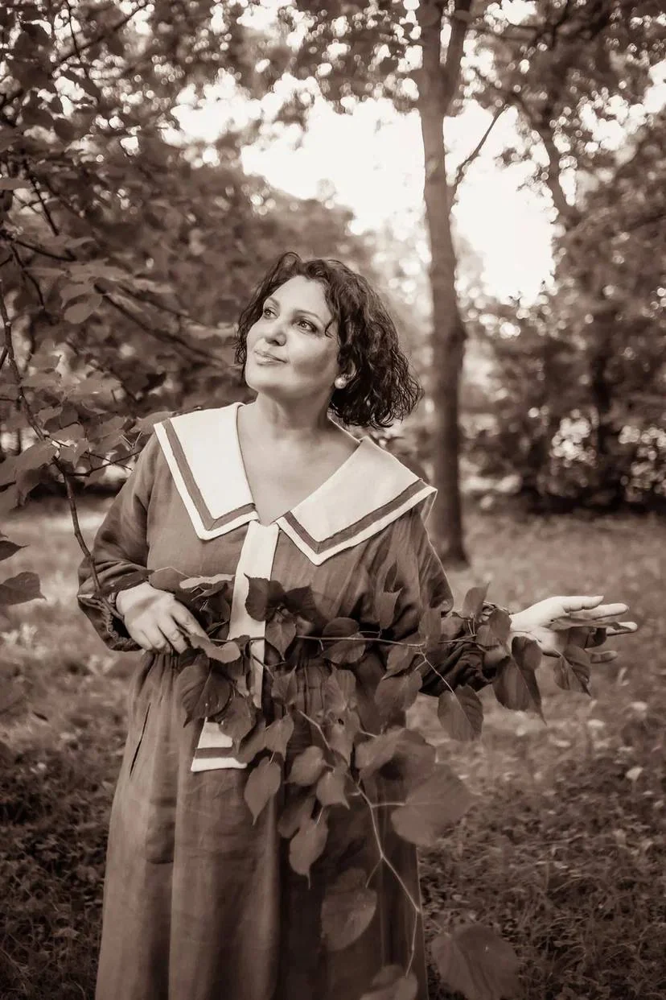
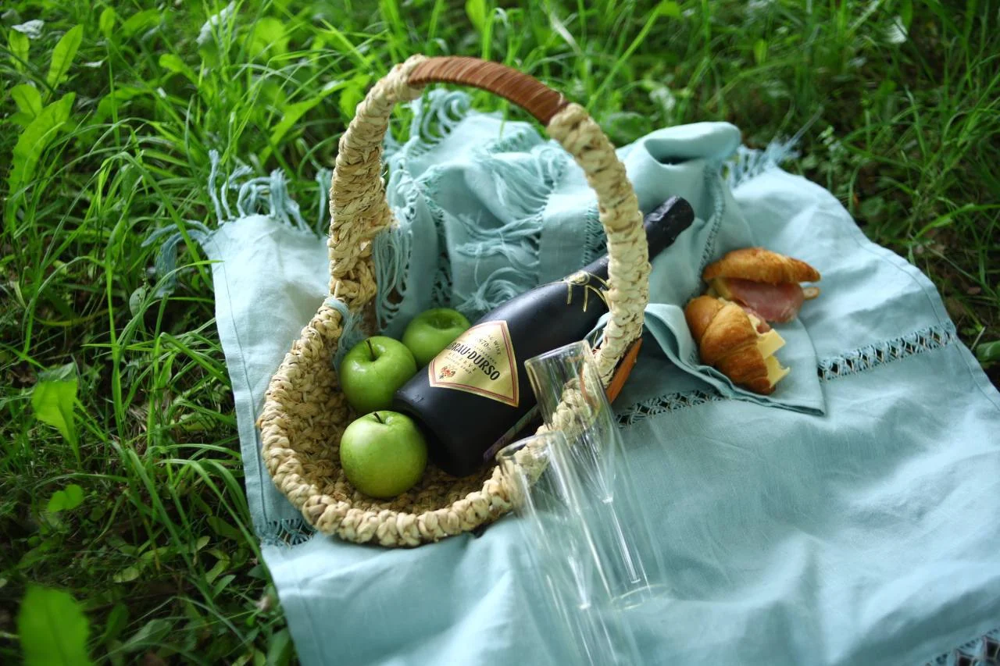

Для новичков
Базовые навыки,
работа на машинке,
первое изделие
Шитьё
Fashion illustration
Живопись
Мастер по пошиву одежды,
преподаватель шитья и художник
в Санкт-Петербурге
Индивидуальные занятия,
мастер-классы и творческие проекты
для тех, кто ценит красоту,
качество и ручную работу.





Обучение
Программа подстраивается под ваш уровень,
цели и ритм. От первых шагов до сложных
технических решений.

Мастер-классы
Небольшие группы,
внимание к деталям
и красивые результаты.


О Надежде
Мастер, преподаватель, художник
Шитьё вошло в мою жизнь благодаря бабушке.
С тех пор прошло почти 40 лет: за это время
я работала с одеждой, тканями, индивидуальными
заказами и обучала других.
По образованию я провизор: окончила медицинский институт, фармацевтический факультет. Во время учёбы шить не прекращала — научилась делать это быстро и регулярно появлялась в институте в обновках.
Ещё тогда, создавая первые вещи, я поняла: шитьё требует вдохновения, точности, дисциплины и уважения к каждой детали.
Мне нравится создавать одежду, которая хорошо сидит и отличается от серийного производства.

40лет опыта
индивидуальный
подход
собственные
методики
работа
с тканями
Работы
Одежда, рисунок
и живопись в работах
Надежды Гусаровой.
Сотрудничество
Открыта к сотрудничеству с магазинами
тканей, швейной техники, творческими
пространствами и медиа.

Напишите, если хотите
обсудить совместное мероприятие
или сотрудничество.